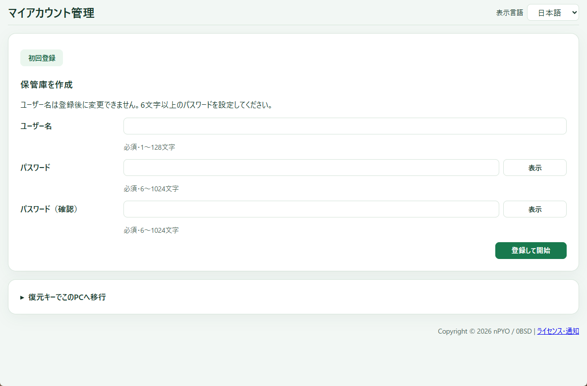
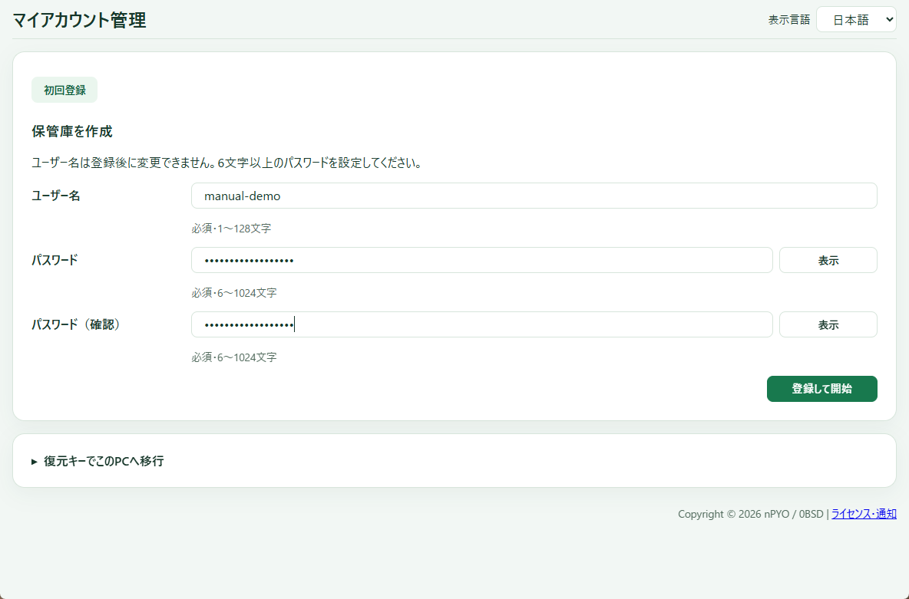
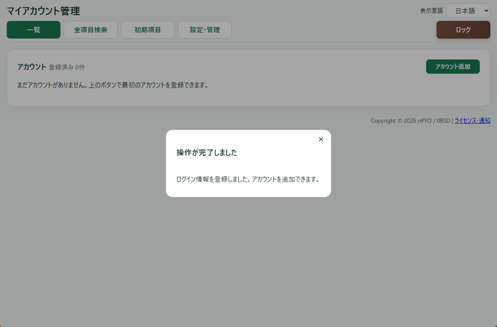

03初回登録
最初に、アプリを開くためのユーザー名とパスワードを登録します。
手順一覧を開く（3手順）
1初回登録画面を確認
「保管庫を作成」が表示されていることを確認します。

2登録情報を入力
ユーザー名とパスワードを入力し、確認欄にも同じパスワードを入れます。

3［登録して開始］を押す
完了表示を確認し、右上の［×］で閉じます。

最初に、アプリを開くためのユーザー名とパスワードを登録します。
「保管庫を作成」が表示されていることを確認します。

ユーザー名とパスワードを入力し、確認欄にも同じパスワードを入れます。

完了表示を確認し、右上の［×］で閉じます。
